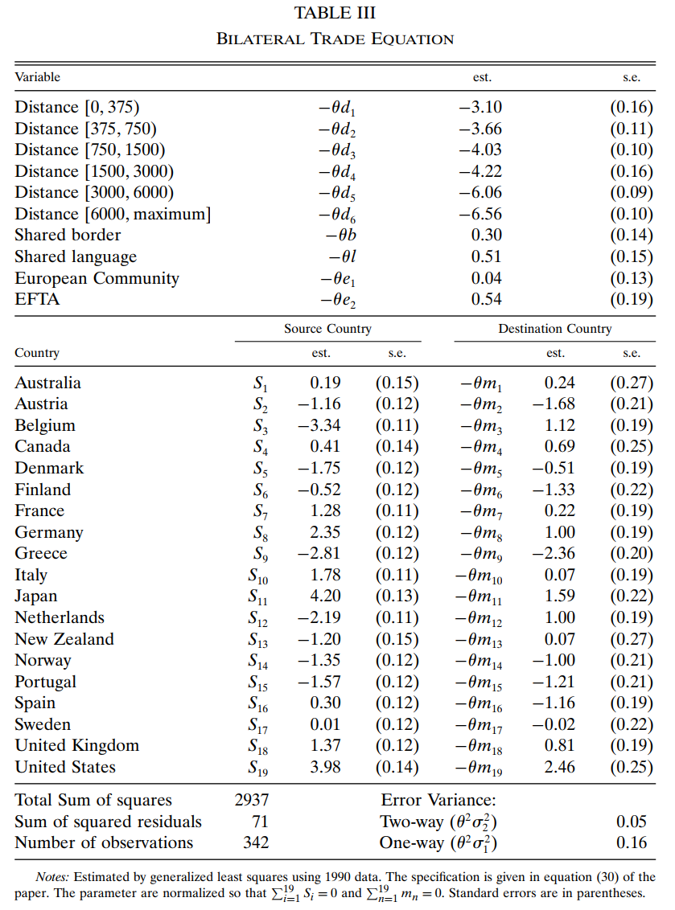
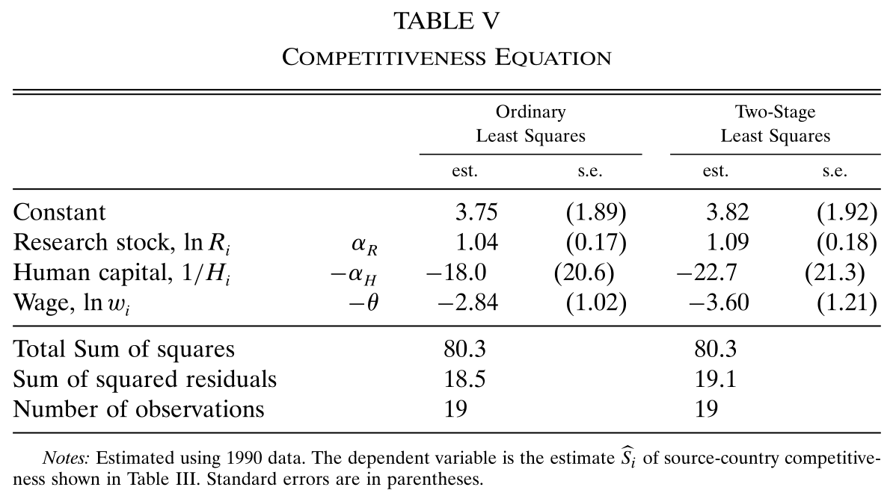
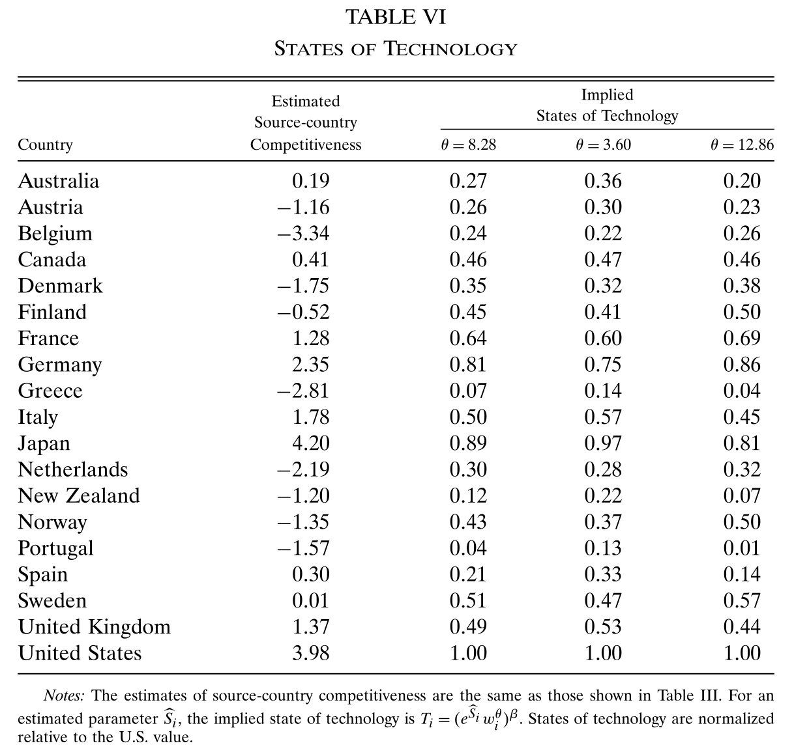
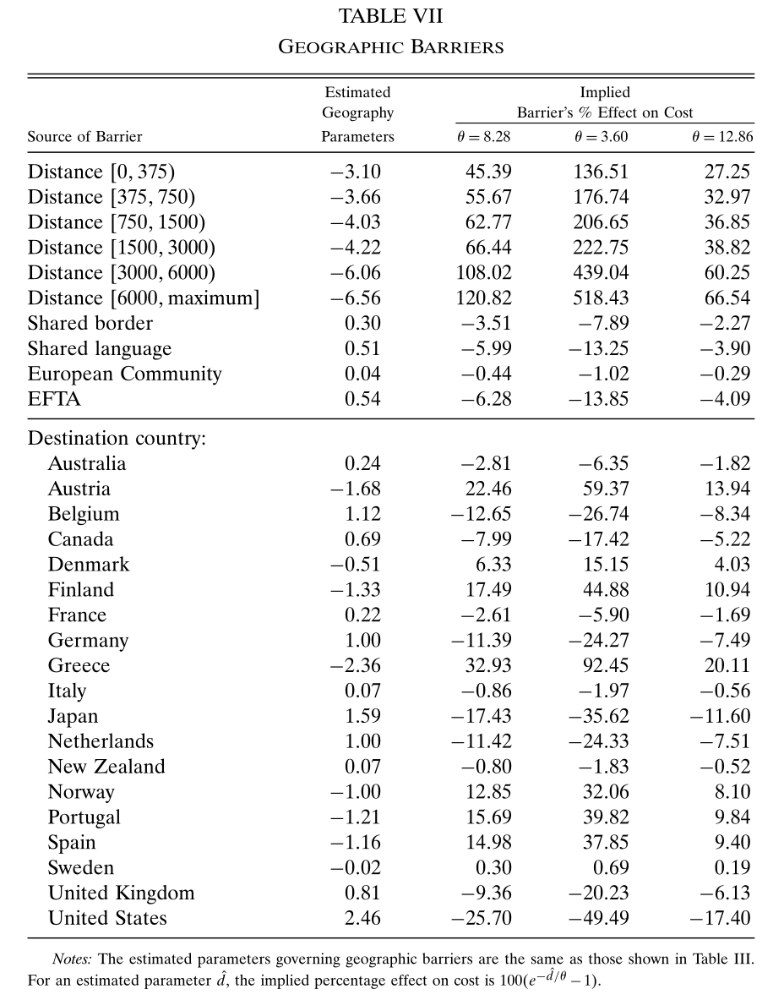

5 估计贸易方程
式(4.3)、(4.4)再加上(4.7)或(4.8)构成了一个一般均衡。这些方程决定了价格水平、贸易份额、制造业工资（劳动力不可跨部门流动）或者制造业就业（劳动力可以跨部门流动）。这一部分我们主要估计一般均衡模型的参数，然后在第六部分进行反事实分析。
5.1 估计来源地效应
(4.4)将双边贸易量同两国各自的特质和地理信息联系了起来，对该式的估计使我们可以了解技术水平与地理障碍。
使用进口国的国内开支对(4.4)的双边贸易数据进行标准化，令 \(\frac{X_{ni}}{X_n}\) 与 \(\frac{X_{nn}}{X_n}\) 两式相除可得
\[ \begin{align} \frac{X_{n i}}{X_{n n}}=\frac{\pi_{n i}}{\pi_{n n}}=\frac{T_{i}}{T_{n}}\left(\frac{w_{i}}{w_{n}}\right)^{-\theta \beta}\left(\frac{p_{i}}{p_{n}}\right)^{-\theta(1-\beta)} d_{n i}^{-\theta} \tag{5.1} \end{align} \]
同样由(4.4)可得
\[ \begin{aligned} \frac{X_{n n}}{X_{n}}&=\pi_{n n}=T_{n}\gamma^{-\theta}\left(\frac{w_{n}}{p_{n}}\right)^{-\beta\theta } \\ \frac{X_{i i}}{X_{i}}&=\pi_{i i}=T_{i}\gamma^{-\theta}\left(\frac{w_{i}}{p_{i}}\right)^{-\beta\theta } \end{aligned} \]
两式相除得
\[ \frac{p_{i}}{p_{n}}=\frac{w_{i}}{w_{n}}\left(\frac{T_{i}}{T_{n}}\right)^{-1 / \theta \beta}\left(\frac{X_{i} / X_{i i}}{X_{n} / X_{n n}}\right)^{-1 / \theta \beta} \]
代入(5.1)消掉 \({p_i}/{p_n}\) 得到
\[ \ln \frac{X_{n i}}{X_{n n}}-\frac{1-\beta}{\beta}\ln \frac{X_{i} / X_{i i}}{X_{n} / X_{n n}}=-\theta \ln d_{n i}+\frac{1}{\beta} \ln \frac{T_{i}}{T_{n}}-\theta \ln \frac{w_{i}}{w_{n}} \]
为了化简该式，定义 \(\ln X_{n i}^{\prime} \equiv \ln X_{ni}-[(1-\beta)/\beta] \ln (X_i/X_{ii})\)，则有
\[ \begin{align} \ln \frac{X_{n i}^{\prime}}{X_{n n}^{\prime}}=-\theta \ln d_{n i}+\frac{1}{\beta} \ln \frac{T_{i}}{T_{n}}-\theta \ln \frac{w_{i}}{w_{n}} \tag{5.2} \end{align} \]
进一步化简，定义
\[ \begin{align} S_i \equiv \frac{1}{\beta} \ln T_i - \theta \ln w_i \tag{5.3} \end{align} \]
则有
\[ \begin{align} \ln \frac{X_{n i}^{\prime}}{X_{n n}^{\prime}}=-\theta \ln d_{n i}+S_i-S_n \tag{5.4} \end{align} \]
其中，\(S_i\) 可以视为 \(i\) 国的竞争力（与技术正相关，与工资负相关），(5.4) 就是我们要估计的基本方程16。
- 利用双边贸易数据，并取 \(\beta\) 的平均值 0.21，就可以计算 (5.4) 的左边。
- 至于等式右边，我们将每一个国家的竞争优势视为一个虚拟变量，\(S_i\) 就是来源国虚拟变量的系数（coefficients on source-country dummy）。
- 最后则是贸易壁垒 \(d_{ni}\)，根据引力方程的文献，我们用一系列代理变量来表示它，包括距离、语言和贸易协定。对于所有的 \(i \neq n\)，建立回归模型：
\[ \begin{align} \ln d_{n i}=d_{k}+b+l+e_{h}+m_{n}+\delta_{n i} \tag{5.5} \end{align} \]
其中 \(d_k\) 表征六档离散距离的效应，\(b\) 表征共同边界，\(l\) 表征共同语言，\(e_h\) 表征是否共同存在于一个区域贸易协定，\(m_n\) 表征目的地国效应(衡量目的地市场的开放程度)。误差项 \(\delta_{n i}\) 又分为两部分 \(\delta_{n i} = \delta_{ni}^2 + \delta_{ni}^1\)。前者反映贸易的互惠性，因此不满足 OLS 经典假设，有 \(\delta_{ni}^2=\delta_{in}^2\)，方差为 \(\sigma_2^2\)；而后者满足 OLS 经典假设，方差为 \(\sigma_1^2\)。这一误差结构意味着，\(\delta\) 的协方差矩阵满足 \(E(\delta_{ni}\delta_{ni})=\sigma_1^2+\sigma_2^2\) 和 \(E(\delta_{ni}\delta_{in})=\sigma_2^2\)。将(5.5)代入(5.4)得到
\[ \begin{align} \ln \frac{X_{n i}^{\prime}}{X_{n n}^{\prime}}=S_{i}-S_{n}-\theta m_{n}-\theta d_{k}-\theta b-\theta l-\theta e_{h}+\theta \delta_{n i}^{2}+\theta \delta_{n i}^{1} \tag{5.6} \end{align} \]
利用 GLS (generalized least squares) 估计该模型，估计结果如 Table 3. 估计结果表明：

- 对 \(S_i\) 的估计表明1990年这19个 OECD 国家中，日本的竞争力最强，紧随其后的是美国。比利时和希腊是竞争力最差的（\(S_i\) 估计值）
- 地理障碍的增加极大地阻碍贸易。共同语言则一定程度上有利于双边贸易。共同边界、欧共体和 EFTA 则不是很重要
- 美国、日本和比利时是（市场）最开放的国家，希腊则是最封闭的（\(m_i\) 的估计值）
- 影响双向贸易流的方差占误差方差的四分之一左右（two-way error variance 是 one-way 的三分之一，总和的四分之一）
接下来我们用另外两种方法估计 \(\theta\).
5.2 利用工资数据估计 \(\theta\)
利用(5.3)，以上文中估计出来的 \(S_i\) 作为被解释变量，用以下模型估计 \(\theta\)
\[ S_{i}=\alpha_{0}+\alpha_{R} \ln R_{i}-\alpha_{H}\left(\frac{1}{H_{i}}\right)-\theta \ln w_{i}+\tau_{i} \]
其中，\(R_i\) 为一国的 R&D 存量，\(H_i\) 为平均受教育年限，\(w_i\) 为经过教育调整的工资，\(\tau_i\) 为误差。

如 Table 5，IV 估计出的 \(\theta\) 为 3.60，比 3.2 节的估计值略小。
但本节用工资估计，观测值只有19个，样本量较小。
5.3 利用价格数据估计 \(\theta\)
详见代码笔记 EK2002 Code (R version): Estimation，IV 估计值为 12.86
以下我们优先使用 3.2 节的估计值，因为它处于另外两种估计值之间。
5.4 估计技术水平和贸易障碍
5.4.1 估计技术
有了 \(\theta\) 的估计值，就可以根据 (5.3) 将 \(T_i\)（第2-4列）从 \(S_i\)（第1列）中剥离出来，如 Table 6 所示。

日本的竞争力虽然比美国强，但技术水平并不如美国，说明日本相对于美国的优势是由较低的工资造成的。另一方面，比利时的竞争力最低，但技术水平并不是最低，表明其竞争力受到了高工资的拖累。
5.4.2 估计贸易障碍
Table 3 中估计出来的各变量，都包含着 \(-\theta\) 因子，故将它们除以 \(-\theta\) 再以 \(e\) 为底数指数化后，即为 \(d_{ni}\) 中的一个因子。
由于 \(d_{ni}\) 为进口品到岸价格在离岸价格基础上的加成系数，所以上面得到的因子反映了该变量对进口品成本的影响。减 1 再乘 100% 后即为 Table 7 后三列的数字。

以共同语言为例，\(-\theta l\) 的估计值为 0.51. 若 \(\theta\) 取 8.28，则 \(e^l\) 为 0.94，表明拥有共同语言将使进口品的价格成为没有共同语言时的 0.94，从而价格的百分比变化为 \((0.94-1)\times 100\%=-5.97\%\)。
经过标准化后，该式允许我们忽略样本内国家与样本外国家的贸易。↩︎